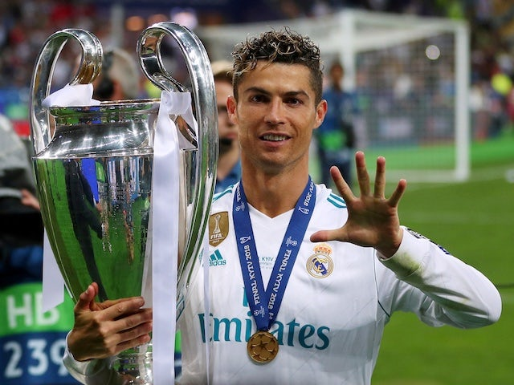

Cristiano Ronaldo

Honours
For a comprehensive listing of Ronaldo's achievements, see List of career achievements by Cristiano Ronaldo.
Sporting CP
- Supertaça Cândido de Oliveira: 2002
Manchester United
- Premier League: 2006–07, 2007–08, 2008–09
- FA Cup: 2003–04
- Football League Cup: 2005–06, 2008–09
- FA Community Shield: 2007
- UEFA Champions League: 2007–08
- FIFA Club World Cup: 2008
Real Madrid
- La Liga: 2011–12, 2016–17
- Copa del Rey: 2010–11, 2013–14
- Supercopa de España: 2012, 2017
- UEFA Champions League: 2013–14, 2015–16, 2016–17, 2017–18
- UEFA Super Cup: 2014, 2017
- FIFA Club World Cup: 2014, 2016, 2017
Juventus
- Serie A: 2018–19, 2019–20
- Supercoppa Italiana: 2018, 2020
Portugal
- UEFA European Championship: 2016
- UEFA Nations League: 2018–19
Individual
- FIFA Ballon d'Or/Ballon d'Or: 2008, 2013, 2014, 2016, 2017
- FIFA World Player of the Year: 2008
- FIFPro World Player of the Year: 2008
- The Best FIFA Men's Player: 2016, 2017
- UEFA Best Player in Europe Award: 2014, 2016, 2017
- UEFA Club Footballer of the Year: 2007–08
- UEFA Club Forward of the Year: 2007–08
- FIFPro Special Young Player of the Year: 2003–04, 2004–05
- PFA Portuguese Player of the Year: 2016, 2017, 2018, 2019
- European Golden Shoe: 2007–08, 2010–11, 2013–14, 2014–15
- FIFA Puskás Award: 2009
- FIFA FIFPro World11: 2007, 2008, 2009, 2010, 2011, 2012, 2013, 2014, 2015, 2016, 2017, 2018, 2019, 2020
- UEFA Team of the Year: 2004, 2007, 2008, 2009, 2010, 2011, 2012, 2013, 2014, 2015, 2016, 2017, 2018, 2019, 2020
- UEFA Champions League Squad of the Season: 2013–14, 2014–15, 2015–16, 2016–17, 2017–18, 2018–19
- UEFA European Championship Team of the Tournament: 2004, 2012, 2016
- UEFA European Championship Silver Boot: 2016
- UEFA Ultimate Team of the Year (published 2017)
- UEFA Nations League Finals Team of the Tournament: 2019
- FIFA World Cup Dream Team: 2018[365]
- FIFA Club World Cup Golden Ball: 2016
- FIFA Club World Cup Silver Ball: 2008, 2014, 2017
- PFA Young Player of the Year: 2006–07
- PFA Players' Player of the Year: 2006–07, 2007–08
- Premier League Player of the Season: 2006–07, 2007–08
- FWA Footballer of the Year: 2006–07, 2007–08[
- PFA Premier League Team of the Year: 2005–06, 2006–07, 2007–08,[86] 2008–09
- Premier League Golden Boot: 2007–08
- La Liga Best Player: 2013–14
- La Liga Best Forward: 2013–14
- La Liga Most Valuable Player: 2012–13
- La Liga Team of the Season: 2013–14, 2014–15, 2015–16
- Pichichi Trophy: 2010–11, 2013–14, 2014–15
- UEFA La Liga Team of The Season: 2015–16, 2016–17
- BBC Overseas Sports Personality of the Year: 2014
- Serie A Most Valuable Player: 2018–19
- Serie A Footballer of the Year: 2019,2020
- Serie A Team of the Year: 2018–19, 2019–20
- Golden Foot: 202
- Ballon d'Or Dream Team: 2020
- Globe Soccer Awards Player of the Century: 2020
- IFFHS World's Best Top Division Goal Scorer: 2014, 2015, 2020
- IFFHS Men's World Team: 2017, 2018, 2019, 2020
- IFFHS UEFA Best Man Player of the Decade: 2011–2020
- IFFHS World Team of the Decade: 2011–2020
- IFFHS UEFA Team of the Decade: 2011–2020
- IFFHS World's Best National Goal Scorer: 2020
- IFFHS World's Best Top Goal Scorer: 2011, 2013, 2014, 2015
- IFFHS World's Best National Goal Scorer of XXI Century: 2001–2020
- IFFHS World's Best Top Goal Scorer of XXI Century: 2001–2020
- IFFHS World's Best Top Goal Scorer of the Decade: 2011–2020
- IFFHS World's Best International Goal Scorer of XXI Century 2001–2020